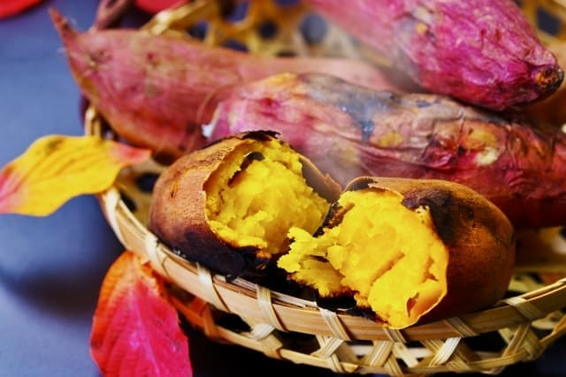
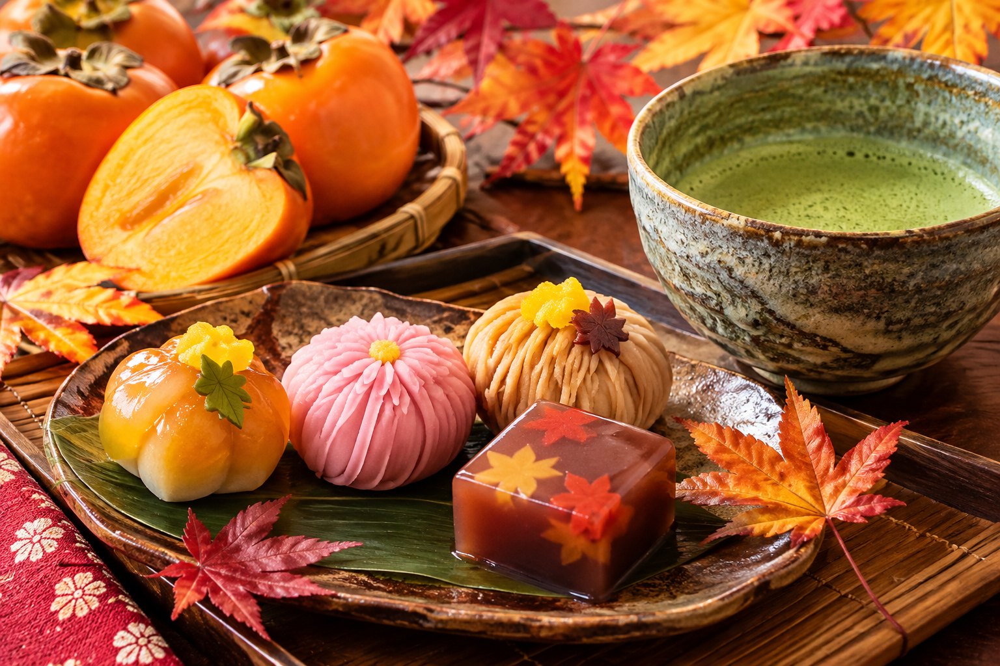

京都の秋の食べ物
秋ならではの味覚を楽しみましょう。
さつまいもと栗
秋は、さつまいもや栗がおいしい季節です。 焼き芋や栗ご飯など、秋の味覚を使った料理が楽しめます。
甘くてほくほくした味わいは、肌寒い秋の日にもぴったりです。

柿と秋の和菓子
柿も秋を代表する果物の一つです。 そのまま食べるほか、さまざまな和菓子にも使われます。
京都では、季節を感じられる和菓子や抹茶と一緒に、 ゆったりとしたお茶の時間を楽しむことができます。

京都の秋の味を楽しもう
京都の秋には、季節の食材を使った料理や 見た目も美しい和菓子があります。
観光の途中にお店に立ち寄って、 秋ならではのおいしさを味わってみましょう。